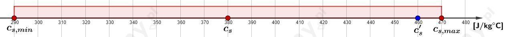

W przeprowadzonym doświadczeniu chcieliśmy ogrzać metalowe nakrętki do temperatury 100°C. Najprościej jest to zrobić zanurzając na jakiś czas nakrętki we wrzącej wodzie. Wiemy, że woda wrze w temperaturze 100°C i między nakrętkami i wodą ustali się równowaga termodynamiczna - metalowe nakrętki ogrzeją się do temperatury podgrzewanej wody.
Odizolowanie nakrętek od ścianek naczynia pozwala na efektywną wymianę ciepła tylko między wodą a nakrętkami. W przeciwnym wypadu metalowe nakrętki mogłyby wymieniać dodatkowo ciepło przez przewodnictwo cieplne ze ściankami naczynia co mogłoby zmienić ich temperaturę końcową.
W doświadczeniu przyjęliśmy, że ciepło oddane przez stalowe nakrętki zostało całkowicie pobrane przez wodę i wynosiło .
Za zapisanego bilansu cieplnego wynikało:
Ciepło właściwe stali wyznaczono jako:
W rzeczywistości w równaniu bilansu cieplnego należałoby uwzględnić nieznane straty ciepła oddanego do otoczenia.
Ciepło właściwe stali wyrazimy jako:
Zatem wyznaczona wartość ciepła właściwego stali w doświadczeniu będzie zawsze mniejsza od rzeczywistego ciepła właściwego stali o nieznany czynnik związany ze stratami ciepła:
Obliczona liczbowo w doświadczeniu wartość ciepła właściwego stali:
Tablicowa wartość ciepła właściwego stali:
Wyznaczmy stosunek tych dwóch wielkości:
Zatem wyznaczona wartość ciepła właściwego stali jest mniejsza od wartości tablicowej o 17%.
Porównanie własnego wyniku doświadczenia z wartością tablicową należy zrobić w analogiczny sposób (indywidualna część zadania).
Wartość tablicowa ciepła właściwego stali:
Wyznaczona w doświadczeniu wartość ciepła właściwego stali:
Minimalna możliwa wartość ciepła właściwego stali dla naszego wyniku:
Maksymalna możliwa wartość ciepła właściwego stali dla naszego wyniku:
Nanosimy wszystkie wielkości na jedną oś liczbową:

Dla wyników własnego doświadczenia postępujemy analogicznie (indywidualna część zadania).
Dane:
Ciepło właściwe wody wynosi:
Szukane:
Rozwiązanie:
Jeśli wyznaczymy ciepło właściwe metalowego przedmiotu, to będziemy mogli zidentyfikować z jakiego materiału został wykonany ten przedmiot.
Metalowy przedmiot będzie ochładzał się do temperatury końcowej oddając ciepło do wody, a woda będzie ogrzewała się do temperatury końcowej pobierając ciepło. Końcowa temperatura przedmiotu i wody ( ) jest taka sama - ustali się równowaga termodynamiczna.
Zapiszmy równanie bilansu cieplnego:
Wyznaczmy ciepło właściwe metalu :
Sprawdzamy w tablicach fizycznych jaki metal charakteryzuje się obliczonym ciepłem właściwym - jest to aluminium.